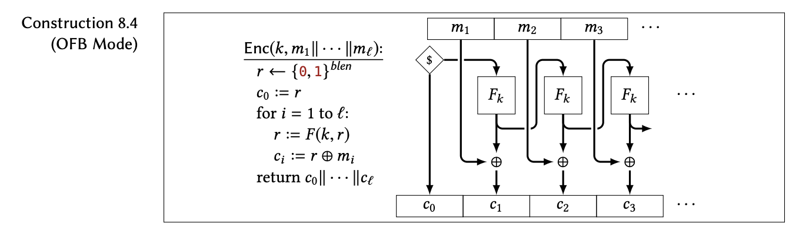

Note: not all ASCII values are printable using text, so if you're encrypting text, your ciphertext on the right (the text version) may look weird. The binary representation on the left is what you should copy and paste if you'd like to decrypt it.
OFB ("output feedback") block cipher is a block cipher like CBC and CTR, meaning that they all encrypt messages by way of splitting up your message into separate blocks of information. OFB also uses a pseudo-random function to encrypt, and this one (just like in CTR) doesn't necessarily need to be invertible.
(Simplified) example:
A helpful diagram from chapter 8 of Mike Rosulek's The Joy of Cryptography is shown below.
The idea of a OFB block cipher is very similar to what was shown in the beginner's explanation. We have our IV, c0, that was chosen from a random assortment of blocks, c0 = r. This, along with our key, k, is the input to our pseudo-random function f. So now we have f(k, r). (This output will be used as the input to our function in the next block, so we can reassign r = F(k, r)) Then we XOR* with our first block of our message, m1. We continue this pattern, using r = F(k, r) and then XOR-ing r with mi to create ci+1
Decryption follows the same format, only you XOR by the corresponding block of ciphertext to get the message block.
* A detailed explanation of the operation XOR can be found under the advanced explanation on the one-time pad page, here.